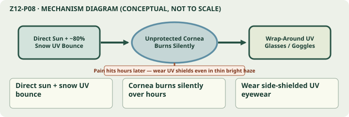

Z12-P08 · Extreme environments · New manuscript
Prevent snow blindness and UV eye injury on bright winter plains
Protect corneas from intense reflected ultraviolet radiation over snowfields even under thin bright clouds.
When it applies · Winter snow travel, frozen lakeshores, glaciers and high-elevation snowpack in bright sun or hazy overcast glare.
Equipment · Wrap-around UV-blocking sunglasses or ski goggles (with spare pair or retention strap).

Actions
- Wear UV-rated wrap-around sunglasses or goggles with side shielding whenever traveling over sunlit snow—fresh snow reflects up to ~80% of UV upward into unprotected eyes, and thin bright clouds still transmit burning UV.[E02, X10, ED]
- Recognize that corneal UV burn (photokeratitis / snow blindness) feels fine during exposure and hits painfully hours later with gritty burning, tearing, swelling and temporary loss of vision.[E02, T01, ED]
- Keep eyewear fog-free by venting face masks cleanly downward away from lenses rather than removing eye protection in intense glare.[E02, E15, ED]
Failure recognition · Leaving sunglasses in the car on a bright March snowshoe trip because air temperature feels cold or skies look lightly hazy.[E02, X10]
Verify · Confirm every group member wears UV-blocking eyewear over bright snow and carries a backup or dark-slit shield option on multi-day winter trips.[E02, ED]
Stop or change course · If gritty painful eyes, severe light sensitivity or blurred vision develop after snow glare, halt travel, rest eyes in dark shelter without rubbing and seek medical care.[T01, T02, ED]
Evidence and editorial notes
- E02 · NPS · Ten Essentials (current web edition)
- Section: Navigation; insulation; emergency shelter; emergency food and water · Conditions: Outdoor trips; adjust kit to season and route
Support: Carry essential systems including navigation, insulation, light, water and emergency shelter.
Limitations: Carrying items without practice or cold-weather verification does not ensure readiness. · Conflicting evidence: None; baseline kit system architecture.
Editorial note: Supports failure-mode packing and kit verification cards. · Specialist reviewer: Field education and search and rescue
Primary source · checked 2026-11-24 - E15 · NWS · Cold Weather Safety (current web edition)
- Section: Cold Weather Safety > Wind Chill and Dressing for Cold · Conditions: Cold, windy conditions where exposed skin cools rapidly
Support: Wind removes the thin warm air boundary layer around skin and permeable fabrics, sharply accelerating heat loss and frostbite onset; windproof outer shells and sheltered microclimates mitigate convective loss.
Limitations: Wind chill charts apply to exposed skin and do not change freezing point of water or equipment. · Conflicting evidence: None; clarifies physical mechanism of convective heat loss.
Editorial note: Supports wind-block geometry, shell layering, and wind-chill risk decisions. · Specialist reviewer: Cold-weather shelter and meteorology
Primary source · checked 2026-11-24 - T01 · American Red Cross · First Aid Steps (current web edition)
- Section: First Aid Steps > Check the scene; check the person · Conditions: Lay responder in United States; assess safety before contact
Support: Check scene safety, responsiveness, breathing and immediately life-threatening conditions.
Limitations: Lay guidance does not replace advanced clinical or rescue protocols. · Conflicting evidence: None; universal first-response opening gate.
Editorial note: Anchors scene-safety-first rule across Z01. · Specialist reviewer: EMS and wilderness medicine
Primary source · checked 2026-11-24 - T02 · American Red Cross · First Aid Steps (current web edition)
- Section: First Aid Steps > Call 9-1-1 · Conditions: Lay emergency response to unresponsiveness, abnormal breathing or severe bleeding
Support: Activate EMS and get needed equipment. Follow dispatcher directions and act within training.
Limitations: Remote locations may delay EMS arrival, requiring sustained stabilization after activation. · Conflicting evidence: None; aligns with NPS-E.
Editorial note: Mandates early emergency activation and dispatcher adherence. · Specialist reviewer: EMS and wilderness medicine
Primary source · checked 2026-11-24 - X10 · NPS · All About Weather: Rocky Mountain National Park (2026 web edition)
- Section: Annual Climate Conditions; seasonal descriptions · Conditions: High-elevation ridges, alpine passes and mountain weather
Support: Mountain temperatures drop sharply with elevation and sunset, afternoon thunderstorms build rapidly over exposed ridges (requiring early starts and turning back below treeline), and steep snowfields conceal runout hazards.
Limitations: Clear morning skies routinely shift to severe lightning and sleet by early afternoon. · Conflicting evidence: None; integrates with E07, E23 and CDC-ALT.
Editorial note: Grounds mountain timing, treeline retreat and elevation-cooling cards. · Specialist reviewer: Mountain safety and meteorology
Primary source · checked 2026-11-25
Source lineage · NPS Ten Essentials and NWS cold/altitude; new manuscript · Classification · New manuscript.